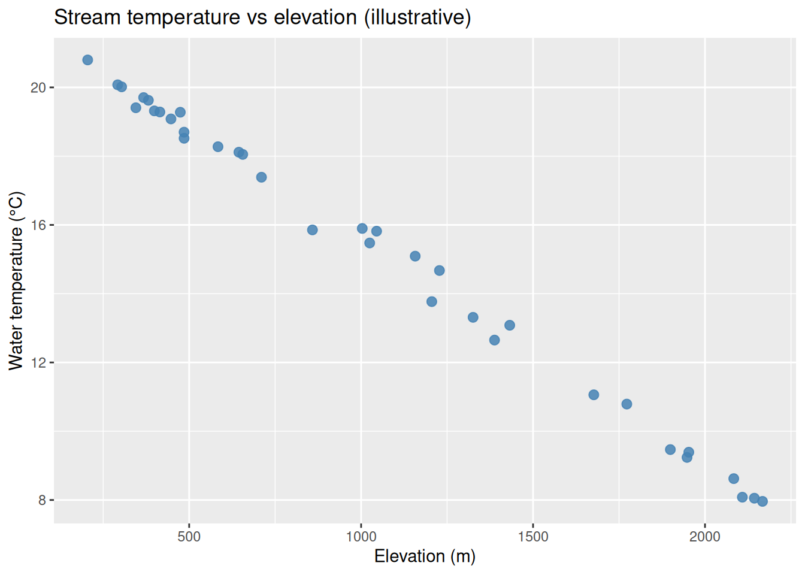
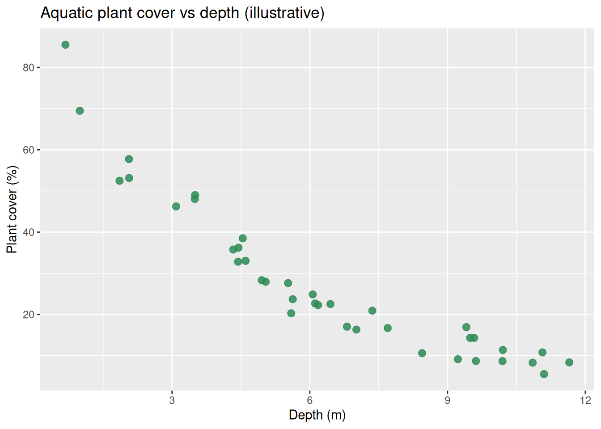

Code
if (!requireNamespace("tidyverse", quietly = TRUE)) {
install.packages("tidyverse", repos = "https://cloud.r-project.org")
}
library(tidyverse)STAT 109: Introductory Biostatistics
aes(x = …, y = …) and geom_point()).When both variables are numerical, we often ask how one changes with the other: does taller vegetation go with wetter soil? Does clutch size change with female body mass? A scatterplot puts one variable on the horizontal axis and one on the vertical axis; each point is one observational unit (a tree, a nest, a transect).
Load data into a data frame (or tibble) with two numeric columns. Map them in aes() and add points.
if (!requireNamespace("tidyverse", quietly = TRUE)) {
install.packages("tidyverse", repos = "https://cloud.r-project.org")
}
library(tidyverse)Minimal pattern:
ggplot(your_data, aes(x = variable_on_x, y = variable_on_y)) +
geom_point() +
labs(title = "…", x = "…", y = "…")Use labs() for titles and axis labels with units when you have them.
Read the cloud of points as a whole.
Form (shape). Is the trend roughly a straight line (linear), bent (curved / nonlinear), split into clusters, or no clear pattern?
Direction. As \(x\) increases, does \(y\) tend to increase (positive association), decrease (negative association), or show no consistent up-or-down trend?
Strength. How tightly do points follow the trend? Strong: points hug a line or curve. Moderate: signal is visible but scatter is noticeable. Weak: only a faint drift. None: no useful trend (random scatter around a horizontal band).
These labels are judgment calls in practice; the point is to communicate what you see before moving to formal models (later in the course).
The plots below use made-up data for teaching. Each chunk builds a small tibble and plots it.
Context: Saplings in a plantation. Stem diameter (cm at breast height) vs age (years). Older stems are thicker; points fall near a straight line with little scatter.
set.seed(26)
trees_age_diam <- tibble(
age_years = runif(40, 5, 25),
diameter_cm = 0.8 * age_years + rnorm(40, 0, 0.4)
)
ggplot(trees_age_diam, aes(x = age_years, y = diameter_cm)) +
geom_point(alpha = 0.85, size = 2.5, color = "darkgreen") +
labs(
title = "Sapling diameter vs age (illustrative)",
x = "Age (years)",
y = "Stem diameter (cm)"
)
Words: Positive direction, strong strength, linear form.
Context: Stream sites along a mountain gradient. Elevation (m) vs water temperature (°C) at midday in summer. Higher sites tend to be cooler.
set.seed(27)
stream_temp <- tibble(
elevation_m = runif(35, 200, 2200),
water_temp_c = 22 - 0.0065 * elevation_m + rnorm(35, 0, 0.35)
)
ggplot(stream_temp, aes(x = elevation_m, y = water_temp_c)) +
geom_point(alpha = 0.85, size = 2.5, color = "steelblue") +
labs(
title = "Stream temperature vs elevation (illustrative)",
x = "Elevation (m)",
y = "Water temperature (°C)"
)
Words: Negative direction, strong strength, linear form.
Context: Female body mass (kg) vs clutch size (eggs) for a songbird species. Heavier females tend to lay slightly more eggs, but other factors add scatter.
set.seed(28)
nests <- tibble(
body_mass_kg = runif(45, 0.018, 0.032),
clutch_size = 3.5 + 120 * body_mass_kg + rnorm(45, 0, 0.45)
)
ggplot(nests, aes(x = body_mass_kg, y = clutch_size)) +
geom_point(alpha = 0.85, size = 2.5, color = "chocolate4") +
labs(
title = "Clutch size vs female body mass (illustrative)",
x = "Female body mass (kg)",
y = "Clutch size (eggs)"
)
Words: Positive direction, moderate strength, linear form.
Context: Forest plots. Canopy openness (percent sky visible) vs understory seedling count per \(m^2\). Slight tendency for more seedlings where light is higher, but noise dominates.
set.seed(29)
understory <- tibble(
canopy_open_pct = runif(50, 5, 45),
seedlings_per_m2 = 2.5 + 0.08 * canopy_open_pct + rnorm(50, 0, 4)
)
ggplot(understory, aes(x = canopy_open_pct, y = seedlings_per_m2)) +
geom_point(alpha = 0.85, size = 2.5, color = "olivedrab") +
labs(
title = "Understory seedlings vs canopy openness (illustrative)",
x = "Canopy openness (%)",
y = "Seedlings per m²"
)
Words: Positive direction, weak strength, linear drift at best.
Context: Moose pellet counts along transects vs soil pH. No story linking these two in this toy dataset; points fill the rectangle.
set.seed(30)
moose_ph <- tibble(
soil_ph = runif(55, 4.5, 7.5),
pellet_count = runif(55, 0, 40)
)
ggplot(moose_ph, aes(x = soil_ph, y = pellet_count)) +
geom_point(alpha = 0.85, size = 2.5, color = "#4a3728") +
labs(
title = "Moose pellets vs soil pH — no built-in link (illustrative)",
x = "Soil pH",
y = "Pellet count (per transect)"
)
Words: No clear direction, no real strength, no simple form.
Context: Tree height (m) vs age (years) in even-aged stands. Growth is fast when young and levels off as crowns compete (diminishing returns), so the mean trend bends.
set.seed(31)
tree_curve <- tibble(
age_years = runif(42, 8, 80),
height_m = 25 * (1 - exp(-0.045 * age_years)) + rnorm(42, 0, 1.1)
)
ggplot(tree_curve, aes(x = age_years, y = height_m)) +
geom_point(alpha = 0.85, size = 2.5, color = "forestgreen") +
labs(
title = "Tree height vs age — saturating growth (illustrative)",
x = "Age (years)",
y = "Height (m)"
)
Words: Overall positive association, strong trend, nonlinear (curved) form.
Context: Pollinator visits per flower vs nectar volume (\(\mu\)L). Very little nectar attracts few visitors; moderate nectar is best; very high volume may correlate with different flower types or confounding, producing a hump in this toy example.
set.seed(32)
nectar <- tibble(
nectar_ul = runif(40, 0.5, 8),
visits = -0.35 * (nectar_ul - 4)^2 + 12 + rnorm(40, 0, 1.2)
)
ggplot(nectar, aes(x = nectar_ul, y = visits)) +
geom_point(alpha = 0.85, size = 2.5, color = "goldenrod3") +
labs(
title = "Pollinator visits vs nectar volume (illustrative)",
x = "Nectar volume (µL)",
y = "Visits per flower (count)"
)
Words: Nonlinear form (hump), moderate strength; direction is not simply positive or negative over the whole \(x\) range.
Context: Lake depth (m) vs submerged macrophyte cover (%). In deeper water, light drops; cover falls off quickly at first, then more slowly (curved decline).
set.seed(33)
lake <- tibble(
depth_m = runif(38, 0.5, 12),
plant_cover_pct = 90 * exp(-0.22 * depth_m) + rnorm(38, 0, 4)
)
ggplot(lake, aes(x = depth_m, y = plant_cover_pct)) +
geom_point(alpha = 0.85, size = 2.5, color = "seagreen") +
labs(
title = "Aquatic plant cover vs depth (illustrative)",
x = "Depth (m)",
y = "Plant cover (%)"
)
Words: Negative association overall, strong trend, nonlinear form.
alpha in geom_point() helps when points overlap.size adjusts point size for slides or print.color or shape can encode a third variable later; for two numerical variables only, one color for all points is fine.For two numerical variables, a scatterplot in ggplot2 uses aes(x, y) and geom_point(). Describe what you see with form (linear vs curved vs none), direction (positive, negative, or none), and strength (strong through none). Real field and lab data rarely look as clean as teaching simulations, but the same vocabulary organizes your first look before modeling.